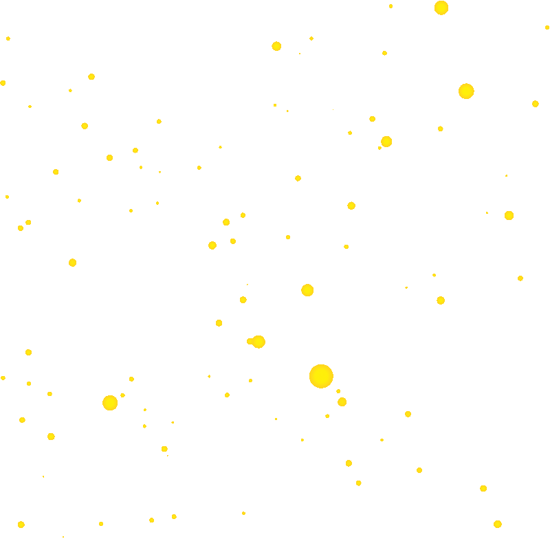
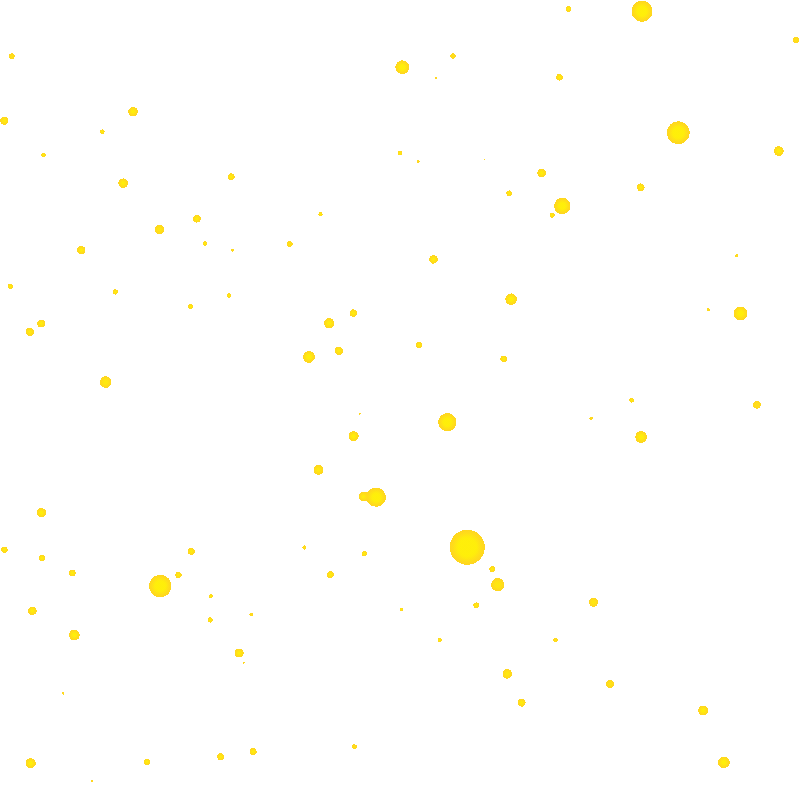

Brief description
Change expressions:
Three expressions of Doraemon are provided and can be switched by clicking the corresponding button.
(Initialisation: When double-clicking on an emoticon button will clear all effects of 'Eye Follow' and 'Eye Control' and will restore the default state of this expression.)
Eye Follow:
When the user clicks within the canvas, Doraemon's eyes will look in the direction of the user's click.
Eyes Control:
When the user clicks on Doraemon's eyes, Doraemon's eyes will close and open when clicked again.
Function logic
Eye position and state memory:
When Doraemon closes his eyes, he remembers the position of his eyes and when he opens them again, he looks to the position before his closed eyes. Similarly, when switching expressions after canvas events have taken effect, Doraemon will still remember the state and position of his eyes. If you want to restore the original state just double click the button.
About the position of the eyes when they are closed:
It is common sense that the state of the eyes when they are closed should not change with the position of the eyeballs, so the closed eye shape is fixed.
About clicking on the non-eye area of the canvas when the eyes are closed:
Doraemon will open its eyes and look directly in the direction of the user's click.
Additional Notes:
Due to the design of Doraemon as an anime character, the distance that the eyes move when clicked at different locations on the canvas has been carefully designed. Therefore the movement of the eyes is not particularly obvious in some click positions. This is a balanced solution to ensure the aesthetics of the look and the functionality of the program.
About the design
With a responsive design for mobile devices.
With different interactive animations to make the pages more interesting.